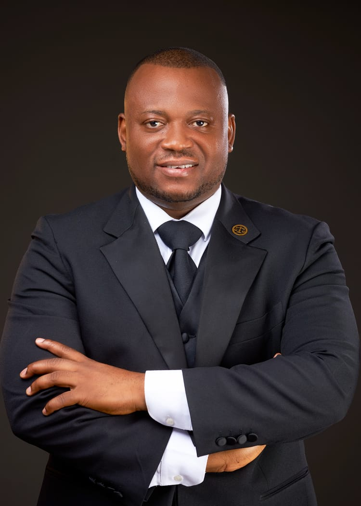
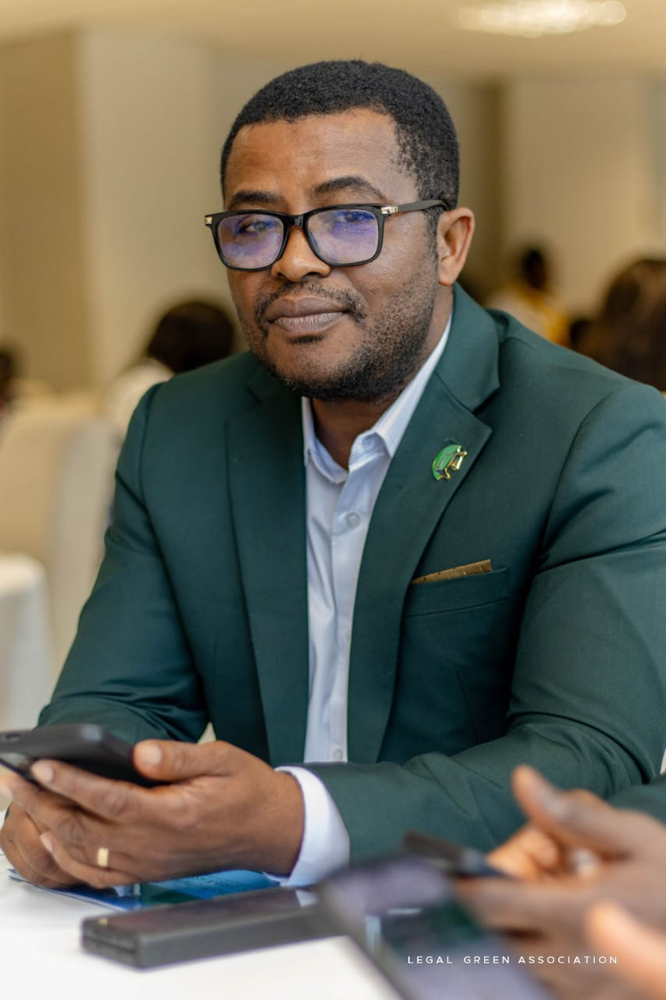
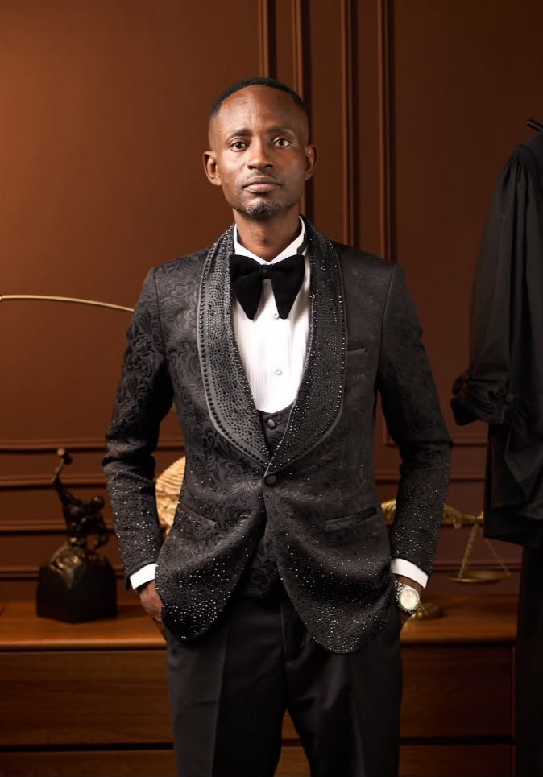

Our mission
Make good policy easier to imagine and achieve.
We advance rigorous research and inclusive dialogue to inform practical policy ideas for Ghana's development.
Who we are
Progressive Policy Institute Ghana is a platform for evidence-led thinking, fresh ideas and constructive public policy dialogue.
We believe the right ideas, brought into the right conversations, can help unlock a brighter future for Ghana.
Our work is grounded in a simple conviction: policy should be informed by evidence, alive to people's realities and focused on outcomes that last. We encourage thoughtful debate and practical solutions to the challenges and opportunities facing our country.
By bringing different perspectives together, we aim to make public policy more accessible, constructive and responsive to Ghana's aspirations.
Our mission
We advance rigorous research and inclusive dialogue to inform practical policy ideas for Ghana's development.
Our vision
We envision a Ghana where policy choices create meaningful opportunity and sustainable progress for all.
Our executive team brings a range of experience and policy interests to the institute's work.


FieldEducation, anti-corruption and public accountability
+233 55 225 5277Director of Research and Publications
FieldDigital policy and innovation
+233 54 523 7797Partnership Director
FieldInternational relations and regional integration
+233 26 321 5813Financial Director
FieldEconomic policy and development
+233 24 792 9451
We ask clear questions and value research that stands up to scrutiny.
We make room for fresh perspectives and reasoned debate.
We pair bold ideas with an eye toward what can make a difference.
We focus on a future with broader opportunity and lasting benefit.
Evidence. Policy. Sustainable progress.
A Ghanaian perspective on the questions that shape our future.
Be part of the dialogue